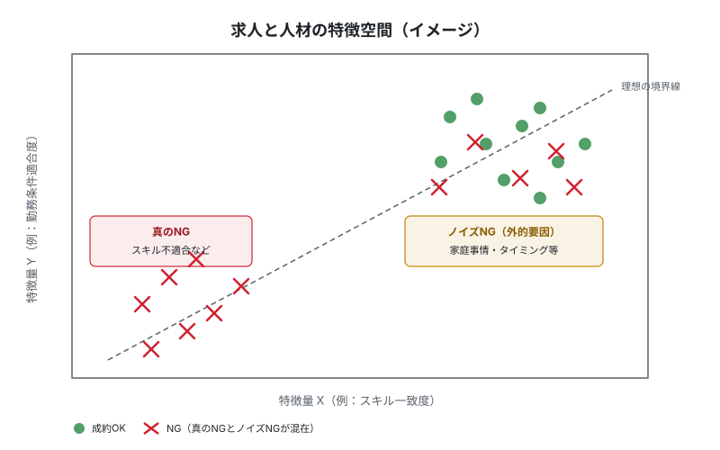
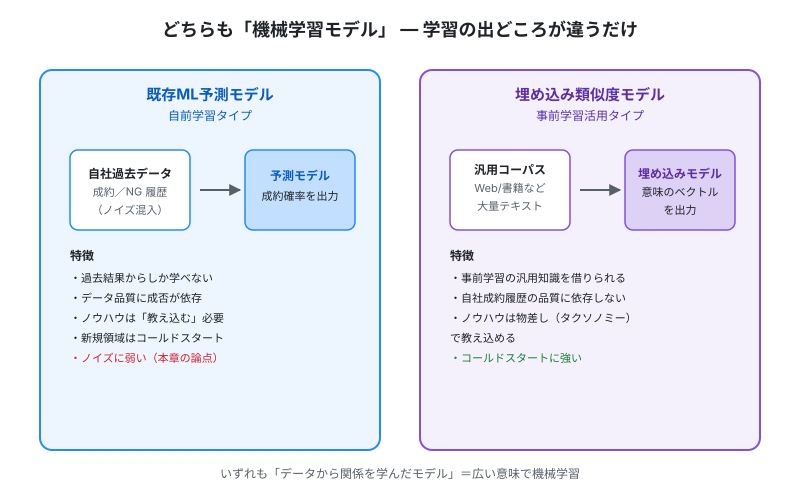
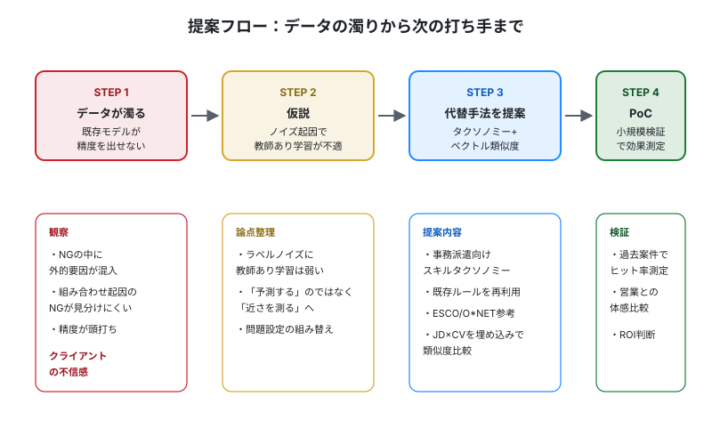

第6章 ケーススタディ：データが濁ったとき何を提案するか
この章の要点
- 教師データにノイズが混ざると、教師あり学習の予測モデルは精度が頭打ちになる
- 「予測する」のではなく「過去事例との近さを測る」へ問題設定を組み替える
- 既存ルールベースをスキルタクソノミーの素材として再利用し、JD×CVをベクトル類似度で比較する
1. 状況設定
あるクライアントは事務派遣を主力とする人材会社で、求人（JD）と人材プロフィール（CV）のマッチングを長年ルールベースで運用してきました。次のステップとして、過去の成約／不成約データを教師に、機械学習の教師あり学習（supervised learning）で成約予測モデルを開発しました。
ところが、精度がどうしても上がらない。原因を掘ると、NG（不成約）データの内訳に問題があることが分かりました。
- 真のNG：スキルや経験が要件に合っていない（本来モデルが学ぶべき情報）
- 外的要因によるNG：家庭事情、タイミング、急な辞退（モデルでは予測しようがない）
- 組み合わせ起因のNG：単独要素は問題ないが、複数条件の重なりで不成立になった
これらが同じ「NG」ラベルで混在しています。営業現場の肌感では「このマッチは妥当だったが客先都合で流れた」と説明できても、データ上は区別できません。クライアントは「学習データを増やしているのに、なぜ良くならないのか」とAIへの不信感を募らせています。

2. なぜ教師あり学習はラベルノイズに弱いか
教師あり学習は「正解ラベルが信頼できる」という前提で動きます。モデルは入力と正解のあいだの規則性を探し、新しい入力に対して正解を予測します。
ところがラベルが信頼できないと、モデルは「ノイズも含めた規則」を学んでしまう。極端にいえば、家庭事情というモデルからは見えない理由までスキル不一致のせいだと誤解する。結果として、本来NGになるはずのないマッチまでNG扱いし始め、現場の感覚と乖離していきます。
⚠ ラベルノイズの怖さ
データ量を増やせばノイズも増えます。「サンプルを足せば精度が上がる」というのは、ラベルが正しい場合の話です。ラベルが濁ったまま量だけ増やしても、頭打ちのラインがほぼ変わらないことが知られています。
3. 重要な整理：どちらも「機械学習モデル」
この章の核心はここです。既存の予測モデルと、これから提案するベクトル類似度モデルは、どちらも機械学習モデルです。違うのは「何で学習しているか」だけ。

| 観点 | 既存ML予測モデル | 埋め込み類似度モデル |
|---|---|---|
| 学習に使ったデータ | 自社の過去成約／NG履歴 | 汎用テキストコーパス（Web、書籍など） |
| 学んでいる中身 | 「自社で成約したパターン」 | 「言葉と言葉の意味の近さ」 |
| 新しい知見の入れ方 | 追加データで再学習 | 物差し（タクソノミー）を作り変える |
| 自社データ品質の影響 | 直接効く | 間接的 |
| 過去結果のない領域 | 扱えない | 汎用知識で扱える |
ここを取り違えると提案が通らない
「ML予測モデルがダメだから、AIをやめてベクトルにする」ではない。両方ともAIで、両方とも機械学習。「学習データの出どころを切り替えて、自社データのノイズに耐性をつける」が正しい説明です。クライアントには「乗り換え」ではなく「設計の組み替え」として伝えます。
4. 「予測する」から「近さを測る」へ
問題設定そのものを書き換えるのが鍵です。
- 従来：このJDとこのCVは、成約するか／しないかを予測する
- 提案：このJDとこのCVは、要件と経験という意味でどれくらい近いかを測る
「近さを測る」設計には、ノイズ混入したNGラベルが直接効きません。営業の意思決定材料は「近さスコア」になり、客先都合などの外的要因は別の運用ロジックで処理できます。
問題設定の組み替えは新人の武器
既存モデルを延命するのではなく、「そもそも解くべき問いを変える」提案ができると、コンサルとしての評価が一段上がる。技術選定の前に問題設定を疑うのが、ベテランがやっていることです。
5. 提案アプローチ：簡易スキルタクソノミーを物差しにする
具体策は、スキルタクソノミー（skill taxonomy）を物差しにして、JDとCVをベクトル化し、類似度で比較することです。
事務派遣領域に絞った簡易版から始めます。たとえば次のような区分けです。
- 業務カテゴリ：経理、人事、総務、営業事務、貿易事務 ほか
- 具体タスク：仕訳入力、月次決算、給与計算、勤怠管理、請求書発行 ほか
- 使用ツール：Excel、SAP、勘定奉行、freee、kintone ほか
- 業界文脈：製造業経理、商社の貿易事務、IT企業の総務 ほか
既存ルールベースを再利用する
ここで効くのが、過去にクライアントが作り込んだルールベースの条件分岐ロジックです。長年積み上げたルール群には、現場の暗黙知が詰まっている。「経理経験ありで、月次決算を1人で回せて、SAP経験があれば、製造業経理に強い」のような条件は、そのままタクソノミーのノードと関連辞書に翻訳できます。
ルールを捨てるのではなく、構造化された知識として吸い上げる。これがクライアントへの説得力にもなります。「御社が10年かけて作ったルールを、次世代の物差しとして活かします」と言える。
国際標準のスキル分類も参考になる
ゼロから作る必要はありません。ESCO（欧州委員会のスキル分類）、O*NET（米労働省）、Lightcastなどが、事務職を含む詳細なスキル体系を公開しています。日本市場向けに再編して使うのが現実解です。
JDとCVをベクトル化する
タクソノミーの各ノードに、関連語（同義語・関連スキル）の集合を持たせます。JDとCVのテキストを、汎用の埋め込みモデルでベクトル化し、タクソノミー上のノードに紐づける。最後に、JDベクトルとCVベクトルのコサイン類似度を計算します。
6. ML予測 vs ベクトル類似度：観点別の比較
| 観点 | ML予測（自前学習） | ベクトル類似度（事前学習活用） |
|---|---|---|
| 説明性 | 「なぜNG？」に答えにくい | 「どのスキル軸で何点」と分解可能 |
| 自社データ品質への耐性 | ラベルノイズの影響を直接受ける | タクソノミーが緩衝層になる |
| コールドスタート | 過去データのない領域は扱えない | 事前学習の汎用知識でカバー |
| 更新容易性 | 再学習にデータ蓄積と計算コスト | タクソノミーを編集すれば即反映 |
| ノウハウの反映方法 | 教師データに「正解」を増やす | タクソノミー設計と関連語登録 |
7. 業界トレンド：意味的な近さへ
人材マッチングや採用テックの領域では、ここ数年で次の流れが定着しつつあります。
- 従来のキーワード一致（「経理」という単語が両方にある）から、ベクトルによる意味的な近さ（「仕訳業務」と「日次会計処理」が近いと分かる）への移行
- フランスのGojobなど、欧州の派遣プラットフォーマーがスキル埋め込みを軸に置く設計を採用
- スキルインテリジェンス領域で、スキルタクソノミー構築を差別化要素とする企業が増加
一方で、タクソノミー整備にはコストがかかります。ROI観点で見送る、あるいは外部ベンダーのタクソノミーをそのまま使う企業も多い。自前構築は「データを資産化したい」という意思決定とセットになります。
8. クライアントへの説明スクリプト例
新人がそのまま使える話法として整理します。
説明スクリプト
「現在の予測モデルは、過去の成約／NG履歴から学習しています。ただ、NGデータの中には、家庭事情やタイミングといった、本来モデルが学ぶべきでない理由が一定割合混ざっています。データ量を増やしても、この種のノイズがあるとモデルは頭打ちになります。」
「そこで提案したいのは、問題設定の組み替えです。『成約するかを予測する』のではなく、『JDとCVが、スキル要件としてどれくらい近いかを測る』設計に変えます。物差しになるのが、御社が10年かけて作ってこられたルールベースのロジックです。これを構造化した辞書（スキルタクソノミー）に変換し、最新の埋め込み技術で意味的な近さを計算します。」
「この方式なら、過去のNG履歴のノイズに引きずられず、営業のかたが『なぜこのマッチは近いと判定したか』も説明可能です。タクソノミー自体は、現場のノウハウを足し引きすれば即座に反映できます。まずは小規模なPoCで、過去案件のヒット率を現行モデルと比較するところから始められます。」
9. 提案フロー

提案の組み立ては「現象→原因仮説→代替設計→検証計画」の4段で整えるとブレません。新人のうちは、各STEPで「クライアントに見せる1枚」を意識して資料化するとよい。
10. 限界と次の一手
この提案も万能ではない。次のような限界を、最初から伝えておくのが誠実な姿勢です。
⚠ ベクトル類似度の限界
- 意味が近いからといって成約するとは限らない（近さ＝成約ではない）
- タクソノミー設計の品質に成果が依存する。粗い辞書では精度が出ない
- 類似度スコアの「閾値」は結局現場で調整が要る
- 業界が変わるとタクソノミーの作り直しが必要
次の一手としては、ベクトル類似度をベースに、外的要因（客先都合、辞退率など）を別軸で扱う運用ルールを併設するハイブリッド構成が現実的です。ルールベースと機械学習の両方を、それぞれの強みが活きる場所に配置する。これが「現役の使い分け」です。
11. 章のまとめ
- データが濁っているとき、教師あり学習の予測モデルを延命するより、問題設定の組み替えが効く
- 既存ML予測と埋め込み類似度は、どちらも機械学習。学習データの出どころが違うだけ
- 既存ルールベースは捨てずに、スキルタクソノミーの素材として再利用する
- 提案は「現象→仮説→代替設計→PoC」の4段で組み立てる
- 新しい方式にも限界がある。最初から限界を伝えるのが信頼につながる
もっと知りたい人へ
- ESCO / European Skills, Competences, Qualifications and Occupations — 欧州委員会が公開するスキル・職業分類。事務職のスキル粒度を見るのに最適
- O*NET OnLine — 米労働省の職業情報データベース。タスク・スキル・知識・ツールが整理されている
- Lightcast / Open Skills — 民間のスキルタクソノミー。労働市場データと結びついた商用例
- arXiv / Learning with Noisy Labels (survey) — ラベルノイズが教師あり学習に与える影響と対策の研究サーベイ
- Hugging Face / Getting Started with Embeddings — 埋め込みの基本と、類似度検索の実装イメージ